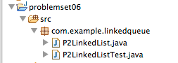

Verification: * Code does compile: .
Explanation: * The code is valid Java.
Test: shouldFindNumberAtFirstIndexAfterAdd()
Hypothesis 1: The item is inserted at the wrong place.
Verification: * Object is inserted at Index 0 as it should:
Explanation: * Tail is at index 0 when the variable is assigned.